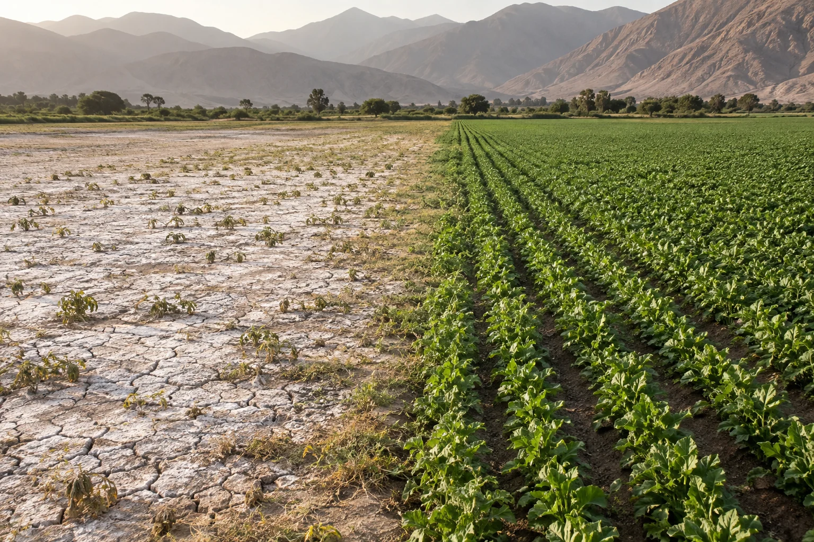
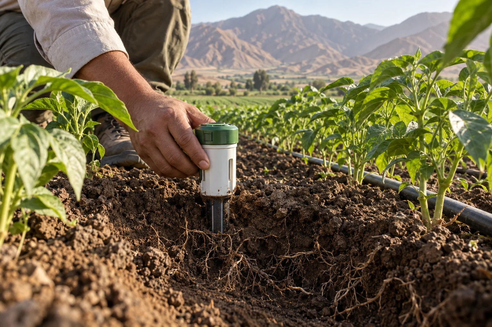
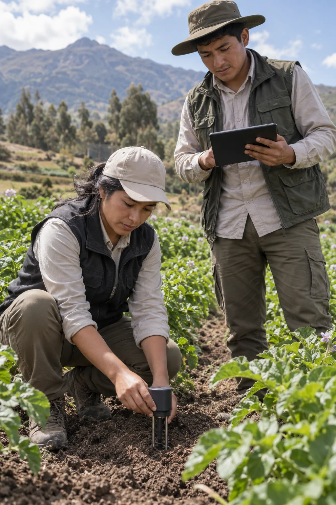

Iker Gabriel Barturen Panez
Estudiante de Ingeniería de Software
Agricultura inteligente
Monitoreo continuo de salinidad con sensores IoT de bajo costo y alertas móviles a pie de surco.
Sensores IoT 24/7
Alertas Inmediatas
La acumulación de sales es un riesgo silencioso.
Más del 40% de tierras bajo riego en valles costeros presentan problemas de sodicidad o salinización progresiva.
Cultivos de alta rentabilidad como palto Hass, uva de mesa y arándano sufren necrosis radicular y caída de calibre.
El lavado estratégico guiado por sensores evita el desperdicio hídrico y optimiza la asimilación de nutrientes en raíz.

Transformamos la manera en que los agricultores cuidan su suelo mediante tecnología accesible y alertas a tiempo.
Ayudamos a productores a proteger su cultivo mediante monitoreo de salinidad.
Notificaciones por WhatsApp y SMS cuando la salinidad (CEe) o humedad exceden el umbral crítico de tu cultivo.
Lecturas continuas de conductividad eléctrica y temperatura cada 15 minutos, reduciendo en 80% los costos de análisis de pasta saturada.
Memoria interna de hasta 60 días sin internet. Sincronización automática vía red celular o Bluetooth en parcelas remotas.

Tecnología diseñada para los valles costeros.
Monitoreo de conductividad eléctrica (CE), humedad volumétrica y temperatura cada 15 min en campo.
Hardware capacitivo calibrado para valles áridos, con protección IP67 y batería de 6 meses de duración.
Gráficos dinámicos de acumulación salina por estrato radicular e índices de lixiviación descargables en PDF.
Interpretación agronómica personalizada para optimizar láminas de lavado de sales y planes de fertilización.
Caracterizamos la variabilidad del suelo y definimos los puntos críticos de monitoreo para tu cultivo.
Sondas capacitivas no destructivas instaladas a 2 profundidades en menos de 10 minutos sin zanjas.
Calibramos alertas automáticas por WhatsApp y SMS según tolerancia de CEe para palto, uva o arándano.
Toma decisiones de fertirriego y lixiviación con curvas de salinidad en tiempo real desde el celular.

Tecnología accesible para cada tamaño de parcela.
Todo lo que necesitas saber sobre OsoSense.
Nuestros sensores cuentan con tecnología de respaldo rural offline. Los datos se almacenan localmente y se sincronizan automáticamente en cuanto detectan conectividad, asegurando que nunca pierdas información.
En absoluto. El diseño es 'Plug & Play'. Solo necesitas enterrar la sonda a la profundidad recomendada y encender el dispositivo. Recibirás datos en tu celular en menos de 5 minutos.
Los sensores están optimizados para un consumo ultra bajo. Con un uso estándar, la batería puede durar toda una campaña agrícola (hasta 6 meses) sin necesidad de recarga.
No. Hemos diseñado la interfaz para que sea tan fácil de usar como WhatsApp. Las alertas te llegan con indicaciones claras y directas, sin gráficos complicados.
Personas apasionadas por unir tecnología, agricultura y conocimiento del suelo.
Estudiante de Ingeniería de Software
Estudiante de Ingeniería de Software
Estudiante de Ingeniería de Software
Estudiante de Ingeniería de Software
Estudiante de Ingeniería de Software
Estudiante de Ingeniería de Software
Estudiante de Ingeniería de Software
Únete a la red de productores que ya protegen sus suelos.
Comenzar ahora